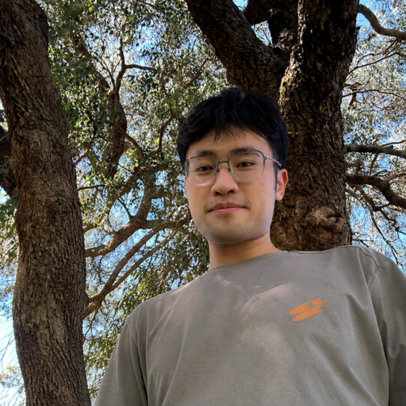
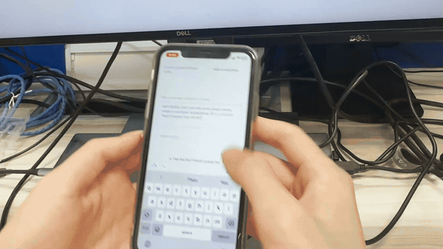
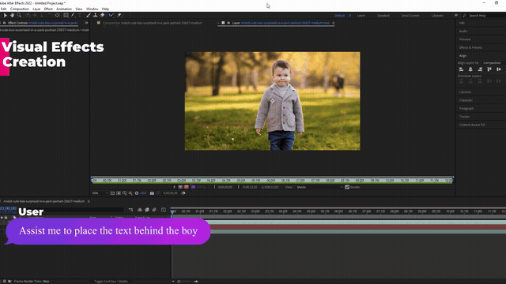
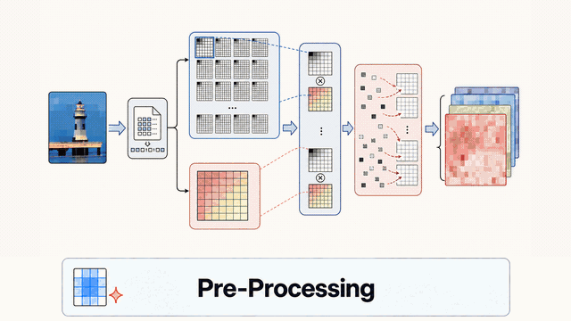

CS Ph.D. Student, National University of Singapore
|
 |
I am a second-year Ph.D. student in Computer Science at the National University of Singapore, co-advised by Prof. Hwee Tou Ng and Prof. Mike Zheng Shou. I completed my Master's at NUS, and obtained my Bachelor's degree from Wuhan University. I am with Show Lab, NUS and ARC Lab, Tencent IEG on multimodal digital agent research. I previously interned at SenseTime Research Singapore and Tencent Map, Beijing. I am interested in the interaction and productivity gains enabled by digital (computer-use/game) agents. Recently, I am focusing on game environments, as games offer rich visual observations, long-horizon goals, and dynamic mechanics. Improvements in perception, reasoning, and control in games will support the future embodiment of digital agents. Previously, I worked on low-level vision training on-device image restoration models for cameras. I was experienced with AI image signal processing (AI-ISP), image compression and restoration. Email: yyyangwhu@gmail.com |
Earlier updates (2023–2025)
|

|
📃 paper 🌐 project page 🏠 github ▶️ introduction Synthetic environments improve transferable agent capabilities: Player-1 presents an agentic post-training framework that learns general game control beyond supervised demonstrations. |

|
📃 paper 🌐 project page 🏠 github ▶️ demo 🖼️ poster 📊 slides Can VLMs play games as humans do? GameWorld evaluates game agents (both computer-use agents and general-purpose agents) with 34 games and 170 tasks. |

|
📃 paper 🌐 project page 🏠 github 🤗 dataset 🖼️ poster Makes UI agents' perception more efficient: FocusUI selects instruction-relevant visual tokens for low-cost UI grounding. |

|
Generates preference-aligned slides for scientific papers. |
|
 |
📃 paper 🌐 project page 🏠 github An out-of-the-box framework for desktop GUI agents, supporting multiple OSs and models. |
|
 |
A desktop GUI agent framework for task decomposition, GUI parsing, action generation, and reflection. |
|
 |
Recovers JEPG-quantized DCT coefficients with spatial-frequency modeling. |
| 2025 - Present | National University of Singapore Ph.D. in Computer Science |
| 2023 - 2024 | National University of Singapore M.Sc. in Data Science and Machine Learning |
| 2019 - 2023 | Wuhan University B.Sc. in Geospatial Informatics and Digitalized Technology |
| 2026 | ARC Lab, Tencent IEG Research Intern (Project Up talent program) |
| 2025 | UseIt AI Agent Dev |
| 2024 | SenseTime Research Singapore Research Intern |
| 2022 | Tencent Map Algorithm Dev Intern |
|